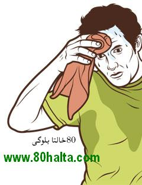

ئالدىنقى يازما
ئالدىنقى يازما كېيىنكى يازما
كېيىنكى يازما
سوغۇق ئەڭگىز بىلەن كالتىسىي كەملىك ئوخشاش گەپمۇ؟
ئاپتور:Birzat ۋاقتى:2010-06-13


ئەسسالامۇ ئەلەيكۇم
تىلىمىزدىكى ئەڭگىزى ئېشىپ كەتتى دېگەن گەپ بىلەن ، تىببىي ئىلىمدىكى كالتسىي كەملىك دېگەن گەپ ، ئوخشاش گەپمۇ ؟
ۋەئەلەيكۇم ئەسسالام
ئاۋۋال بۇ ئىككىسىنىڭ تىلىمىزدىكى ئىزاھلىق مەنىسى كۆرۈپ چىقايلى :
ئەڭگىز :
①ئى . سوغۇق مىجەز ، سوغۇقلۇق : بۇ بالىنىڭ ئەڭگىزى ئېشىپ قالغان ئوخشايدۇ .
②سۈپ . كۆچمە . تېرىككەك ؛ يىغلاڭغۇ : بۇ بالا بەك ئەڭگىز بالا بوپتۇ .
كالتسىي :
ئى [ر<لات] <خىم>
①مېتال ئېلېمېنت . بەلگىسى .)calcium(Ca ئاق رەڭدە ، خىمىيىۋى خۇسۇسىيىتى ئاكتىپ . كالتسىينىڭ بىرىكمىلىرى بىناكارلىق قۇرۇلۇشى ۋە دورىگەرلىكتە كەڭ قوللىنىلىدۇ . ئۇ ئادەم قېنى ۋە سۆڭەكلەردە بولىدۇ . كالتسىي ئادەم بەدىنىدە كەم بولسا ، راخىت كېسىلى پەيدا بولىدۇ . پۇت - قول تارتىشىدۇ .
______________________________________________________________
ئەمدى ئاساسلىق گەپكە كەلسەك كۆپ تەرلەش ، پەي تارتىپ قىلىش، بەل-پۇت، قول، مۈرە تېلىپ ئاغرىش، ھەزىم سىستېمىسى ياخشى بولماسلىق، ئەر-ئاياللاردىكى جىنسىي قۇۋۋەتنىڭ ئاجىزلاپ قىلىشى، سۆڭەك شالاڭشىش قاتارلىق ئالامەتلەرنى ئۇيغۇر تېبابىتىمىزدە ياكى خەلق تېلىمىزدا << سوغۇقتىن بولغان ساقسىزلىق >>، ياكى << سوغۇق ئەڭگىزنىڭ ئىشىپ كېتىشى >> دىن بولغان دەپ قاراپ ئىسسىقلىقى يۇقۇرى، قۇۋۋەتلىك غىزالارنى ئىستىمال قىلىشنى بۇيرۇش بىلەن بىرگە دورىلاردىن << ماددىتىل ھايات >> نى يەپ بىرىشنى تەۋسىيە قىلىدۇ. ماددىتىل ھاياتنىڭ تەركىبىدىكى خۇرۇچلارنى ھازىرقى زامان خېمىيەسى بىلەن تەھىلىل-ئانالىز قىلغاندا ئۇنىڭ ئاساسلىق تەركىبىنى كالتىسىي، سىنىك، سىلىن دېگەندەك ئادەم بەدىنىگە زۆرۈر ئېلىمىنتلار تۇتىدىغانلىقى مەلۇم.
ﻣﺎﺩﺩﻩﺗﯘﻝ ﻫﺎﻳﺎﺕ
ﺗﻪﺳﯩﺮﻯ: ﻣﯧﯖﻪ، ﺑﯚﺭﻩﻙ، ئاﺷﻘﺎﺯﺍﻧﻨﻰ ﻗﯘﯞﯞﻩﺗﻠﻪﺵ، ﺑﻪﺩﻩﻧﺪﯨﻜﻰ ئاﺭﺗﯘﻕ ﻫﯚﻟﻠﯜﻛﻨﻰ ﻗﯘﺭﯗﺗﯘﺵ، ئاﻏﺮﯨﻖ ﭘﻪﺳﻪﻳﺘﯩﺶ، ﻣﻪﻧﻰ ﻛﯚﭘﻪﻳﺘﯩﺶ ئۈﻧﯜﻣﯩﮕﻪ ﺋﯩﮕﻪ.
ﺋﯩﺸﻠﯩﺘﯩﻠﯩﺸﻰ: ﻣﯧﯖﻪ، ﭘﺎﻟﻪﭺ، ﻟﻪﻗﯟﺍ ﻛﯧﺴﻪﻟﻠﯩﻜﻠﯩﺮﯨﮕﻪ، ئاﺷﻘﺎﺯﺍﻥ-ئۈﭼﻪﻳﻠﻪﺭﻧﻰ ﻗﯘﯞﯞﻩﺗﻠﻪﺵ، ﺋﯩﺸﺘﺎﻫﺎ ﺋﯩﭽﯩﺶ، ﺗﯩﻠﺪﯨﻜﻰ ﺋﯧﻐﯩﺮﻟﯩﻖ، ﺳﯜﻳﺪﯛﻛﻨﻰ ﺗﯧﻤﯩﭗ ﻛﯩﻠﯩﺸﯩﻨﻰ ﻳﻮﻗﯘﺗﯘﺵ، ﺑﻪﺩﻩﻧﺪﯨﻜﻰ ئاﺭﺗﯘﻕ ﻫﯚﻟﻠﯜﻛﻨﻰ ﭼﯩﻘﯩﺮﯨﺶ،ﺑﻪﻝ ﯞﻩ ﺑﯚﺭﻩﻙ ئاﻏﺮﯨﻘﻰ، ﻣﯘﭘﺎﺳﺴﯩﻠﻨﻰ ﺩﺍﯞﺍﻻﺵ، ﺟﯩﻨﺴﯩﻲ ﻗﯘﯞﯞﻩﺗﻨﻰ ئاﺷﯘﺭﯗﺵ،ﺧﯘﺷﺨﯘﻱ ﻗﯩﻠﯩﺶ، ﭼﯩﺮﺍﻳﯩﻨﻰ ﮔﯜﺯﻩﻟﻠﻪﺷﺘﯜﺭﯛﺵ، ﺋﯧﻐﯩﺰﺩﯨﻜﻰ ﭘﯘﺭﺍﻗﻨﻰ ﻳﻮﻗﯘﺗﯘﺵ،ﭼﯩﺸﻨﻰ ﭼﯩﯖﯩﺘﯩﺶ، ﻳﻪﻟﺪﯨﻦ ﺑﻮﻟﯩﺪﯨﻐﺎﻥ ﻗﯘﻟﯩﻨﺠﯩﻨﻰ ﻳﻮﻗﯩﺘﯩﺶ ﻗﺎﺗﺎﺭﻟﯩﻖ ﺷﯩﭙﺎﻟﯩﻖ ﺧﺎﺳﯩﻴﻪﺗﻠﻪﺭﮔﻪ ﺋﯩﮕﻪ ﺩﻭﺭﺍ ﺑﻮﻟﯘﭖ ئاﺳﺎﺳﻪﻥ ﺳﻮﻏﯘﻕ ﻣﯩﺠﻪﺯﻟﯩﻜﻠﻪﺭﮔﻪ ھەم سوغۇقتىن بولغان ساقسىزلىقلارغا ﻣﺎﺱ ﻛﯩﻠﯩﺪﯗ.
ھازىرقى زامان غەرب تېبابىتى ساھەسىدە يۇقۇردىكى كۆپ تەرلەش، پۇت-قوللار ئېغىرلىشىش، تېلىپ ئاغرىش ...دېگەندەك ساقسىزلىق ئالامەتلىرىنى ئادەم بەدىنىگە زۆرۈر ئىلمىنتلارنىڭ بىرسى بولغان كالتىسىي كەملىكتىن بولغان دەپ قارايدۇ.
بۇ ئىككىسى ئېيتىلىشتا پەرقلىق بولغان بىلەن ماھىيەتتە ئاساسەن ئوخشاپ كېتىدۇ. ئوخشىمايدىغان كىچىككىنە پەرق بولسا << ئەڭگىز >> ئومومىي بەدەن مىزاجىنىڭ سوغۇقلۇقى ئىشىپ كەتكەننى كۆرسەتسە كالتىسىي شۇ سوغۇقلۇق سەۋەبىدىن بەدەندە خورايدىغان قۇۋۋەتنى كۆرسىتىدۇ.
بۇ ھەقتە تېخىمۇ تەپسىلىي ئىزدىنىپ بېقىشقا ئەرزىيدۇ.
_________ بىرزات
تىلىمىزدىكى ئەڭگىزى ئېشىپ كەتتى دېگەن گەپ بىلەن ، تىببىي ئىلىمدىكى كالتسىي كەملىك دېگەن گەپ ، ئوخشاش گەپمۇ ؟

ۋەئەلەيكۇم ئەسسالام
ئاۋۋال بۇ ئىككىسىنىڭ تىلىمىزدىكى ئىزاھلىق مەنىسى كۆرۈپ چىقايلى :
ئەڭگىز :
①ئى . سوغۇق مىجەز ، سوغۇقلۇق : بۇ بالىنىڭ ئەڭگىزى ئېشىپ قالغان ئوخشايدۇ .
②سۈپ . كۆچمە . تېرىككەك ؛ يىغلاڭغۇ : بۇ بالا بەك ئەڭگىز بالا بوپتۇ .
كالتسىي :
ئى [ر<لات] <خىم>
①مېتال ئېلېمېنت . بەلگىسى .)calcium(Ca ئاق رەڭدە ، خىمىيىۋى خۇسۇسىيىتى ئاكتىپ . كالتسىينىڭ بىرىكمىلىرى بىناكارلىق قۇرۇلۇشى ۋە دورىگەرلىكتە كەڭ قوللىنىلىدۇ . ئۇ ئادەم قېنى ۋە سۆڭەكلەردە بولىدۇ . كالتسىي ئادەم بەدىنىدە كەم بولسا ، راخىت كېسىلى پەيدا بولىدۇ . پۇت - قول تارتىشىدۇ .
______________________________________________________________
ئەمدى ئاساسلىق گەپكە كەلسەك كۆپ تەرلەش ، پەي تارتىپ قىلىش، بەل-پۇت، قول، مۈرە تېلىپ ئاغرىش، ھەزىم سىستېمىسى ياخشى بولماسلىق، ئەر-ئاياللاردىكى جىنسىي قۇۋۋەتنىڭ ئاجىزلاپ قىلىشى، سۆڭەك شالاڭشىش قاتارلىق ئالامەتلەرنى ئۇيغۇر تېبابىتىمىزدە ياكى خەلق تېلىمىزدا << سوغۇقتىن بولغان ساقسىزلىق >>، ياكى << سوغۇق ئەڭگىزنىڭ ئىشىپ كېتىشى >> دىن بولغان دەپ قاراپ ئىسسىقلىقى يۇقۇرى، قۇۋۋەتلىك غىزالارنى ئىستىمال قىلىشنى بۇيرۇش بىلەن بىرگە دورىلاردىن << ماددىتىل ھايات >> نى يەپ بىرىشنى تەۋسىيە قىلىدۇ. ماددىتىل ھاياتنىڭ تەركىبىدىكى خۇرۇچلارنى ھازىرقى زامان خېمىيەسى بىلەن تەھىلىل-ئانالىز قىلغاندا ئۇنىڭ ئاساسلىق تەركىبىنى كالتىسىي، سىنىك، سىلىن دېگەندەك ئادەم بەدىنىگە زۆرۈر ئېلىمىنتلار تۇتىدىغانلىقى مەلۇم.
ﻣﺎﺩﺩﻩﺗﯘﻝ ﻫﺎﻳﺎﺕ
ﺗﻪﺳﯩﺮﻯ: ﻣﯧﯖﻪ، ﺑﯚﺭﻩﻙ، ئاﺷﻘﺎﺯﺍﻧﻨﻰ ﻗﯘﯞﯞﻩﺗﻠﻪﺵ، ﺑﻪﺩﻩﻧﺪﯨﻜﻰ ئاﺭﺗﯘﻕ ﻫﯚﻟﻠﯜﻛﻨﻰ ﻗﯘﺭﯗﺗﯘﺵ، ئاﻏﺮﯨﻖ ﭘﻪﺳﻪﻳﺘﯩﺶ، ﻣﻪﻧﻰ ﻛﯚﭘﻪﻳﺘﯩﺶ ئۈﻧﯜﻣﯩﮕﻪ ﺋﯩﮕﻪ.
ﺋﯩﺸﻠﯩﺘﯩﻠﯩﺸﻰ: ﻣﯧﯖﻪ، ﭘﺎﻟﻪﭺ، ﻟﻪﻗﯟﺍ ﻛﯧﺴﻪﻟﻠﯩﻜﻠﯩﺮﯨﮕﻪ، ئاﺷﻘﺎﺯﺍﻥ-ئۈﭼﻪﻳﻠﻪﺭﻧﻰ ﻗﯘﯞﯞﻩﺗﻠﻪﺵ، ﺋﯩﺸﺘﺎﻫﺎ ﺋﯩﭽﯩﺶ، ﺗﯩﻠﺪﯨﻜﻰ ﺋﯧﻐﯩﺮﻟﯩﻖ، ﺳﯜﻳﺪﯛﻛﻨﻰ ﺗﯧﻤﯩﭗ ﻛﯩﻠﯩﺸﯩﻨﻰ ﻳﻮﻗﯘﺗﯘﺵ، ﺑﻪﺩﻩﻧﺪﯨﻜﻰ ئاﺭﺗﯘﻕ ﻫﯚﻟﻠﯜﻛﻨﻰ ﭼﯩﻘﯩﺮﯨﺶ،ﺑﻪﻝ ﯞﻩ ﺑﯚﺭﻩﻙ ئاﻏﺮﯨﻘﻰ، ﻣﯘﭘﺎﺳﺴﯩﻠﻨﻰ ﺩﺍﯞﺍﻻﺵ، ﺟﯩﻨﺴﯩﻲ ﻗﯘﯞﯞﻩﺗﻨﻰ ئاﺷﯘﺭﯗﺵ،ﺧﯘﺷﺨﯘﻱ ﻗﯩﻠﯩﺶ، ﭼﯩﺮﺍﻳﯩﻨﻰ ﮔﯜﺯﻩﻟﻠﻪﺷﺘﯜﺭﯛﺵ، ﺋﯧﻐﯩﺰﺩﯨﻜﻰ ﭘﯘﺭﺍﻗﻨﻰ ﻳﻮﻗﯘﺗﯘﺵ،ﭼﯩﺸﻨﻰ ﭼﯩﯖﯩﺘﯩﺶ، ﻳﻪﻟﺪﯨﻦ ﺑﻮﻟﯩﺪﯨﻐﺎﻥ ﻗﯘﻟﯩﻨﺠﯩﻨﻰ ﻳﻮﻗﯩﺘﯩﺶ ﻗﺎﺗﺎﺭﻟﯩﻖ ﺷﯩﭙﺎﻟﯩﻖ ﺧﺎﺳﯩﻴﻪﺗﻠﻪﺭﮔﻪ ﺋﯩﮕﻪ ﺩﻭﺭﺍ ﺑﻮﻟﯘﭖ ئاﺳﺎﺳﻪﻥ ﺳﻮﻏﯘﻕ ﻣﯩﺠﻪﺯﻟﯩﻜﻠﻪﺭﮔﻪ ھەم سوغۇقتىن بولغان ساقسىزلىقلارغا ﻣﺎﺱ ﻛﯩﻠﯩﺪﯗ.
ھازىرقى زامان غەرب تېبابىتى ساھەسىدە يۇقۇردىكى كۆپ تەرلەش، پۇت-قوللار ئېغىرلىشىش، تېلىپ ئاغرىش ...دېگەندەك ساقسىزلىق ئالامەتلىرىنى ئادەم بەدىنىگە زۆرۈر ئىلمىنتلارنىڭ بىرسى بولغان كالتىسىي كەملىكتىن بولغان دەپ قارايدۇ.
بۇ ئىككىسى ئېيتىلىشتا پەرقلىق بولغان بىلەن ماھىيەتتە ئاساسەن ئوخشاپ كېتىدۇ. ئوخشىمايدىغان كىچىككىنە پەرق بولسا << ئەڭگىز >> ئومومىي بەدەن مىزاجىنىڭ سوغۇقلۇقى ئىشىپ كەتكەننى كۆرسەتسە كالتىسىي شۇ سوغۇقلۇق سەۋەبىدىن بەدەندە خورايدىغان قۇۋۋەتنى كۆرسىتىدۇ.
بۇ ھەقتە تېخىمۇ تەپسىلىي ئىزدىنىپ بېقىشقا ئەرزىيدۇ.
_________ بىرزات

 يازما مەنبەسى: بېكەت ئەسىرى
يازما مەنبەسى: بېكەت ئەسىرى خەتكۈش: كالتىسىسي، سوغۇق، ئەڭگىز
خەتكۈش: كالتىسىسي، سوغۇق، ئەڭگىز  مۇناسىۋەتلىك يازمىلار:
مۇناسىۋەتلىك يازمىلار:
ئىنكاس: 4 | نەقىل: 0 | كۆرۈلگىنى: -
 قايتۇرما
قايتۇرما ]
]مەن تۈنۈگۈن مەسلىھەت سورىغان ئىدىم .بىرزات ھەكىم ، ئۆزلىرىنىڭ يازغان يازمىلىرىنى كۆرەلمەيۋاتىمەن ، ئۆزۈم يازغىننىمۇ كۆرەلمىدىم ...نەدىن كۆرىمەن ؟
ياخشىمۇسىز بىرزات ئەپەندى،سىزدىن سورايدىغان بىر سوئالىم بار ئىدى.4ياشلىق بىر قىزىم بار،كىچىگىدىن باشلاپ ئۇيقۇسى ۋە تامىقى ياخشى ئەمەس،دوختۇرغا كۆپ قېتم تەكشۇرتتۇم،ئۇلارنىڭ دىيىشىچە كالتسى،سىنك كەملىكتىن شۇنداق بولىدىكەن،ئۇلارنىڭ پىكرى بويىچە دورىلارنى بېرىۋاتىمەن،لېكىن قەتئى ئۈنۈمى بولمىدى،شۇڭا سىزنىڭ مەسلىھەتىڭىزنى ئېلىپ باقاي دىگەن.
ھامىلدارلىق مەزگىلىدىكى جىنسىي مۇناسىۋەت ۋە بۇ جەھەتتە دىققەت قىلىدىغان ئىشلار توغرىسىدا بىر تېما يېزىپ قالدۇرۇشىڭىزنى ئۈمۈت قىلىمەن.
بەل چىم بولغان سوغۇق ئۆتكەن سەۋەپلىك بەل ئاغرىقىنى داۋالىغىنى بولامدۇ
ئىنكاس يوللاش